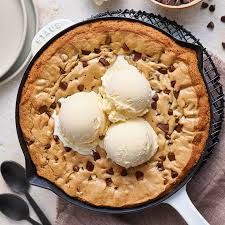

Pizookie Recipe

A pizookie is a large skillet cookie topped with fresh ice cream of choice
Ingredients
- 1.5 cups flour
- 1/2 cup rolled oats
- 1 TSP baking soda, ground cinnamon, and vanilla extract
- 1/2 cup white sugar and brown sugar each
- 2 large eggs
- 3/4 cup butter
- 1/2 cup chopped pecans
- 12oz chocolate chips
Steps
- Preheat oven to 350 F
- Whisk flour, oats, baking soda, cinnamon, and salt in bowl
- Cream white sugar, butter, and brown sugar in bowl until light and fluffy. add eggs and vanilla one at a time, mixing after each addition
- start mixing in dry ingredients until combined, then stir in chocolate chips and pecans
- transfer dough to 10in cast iron skillet, and press down to distribut eevenly over bottom of skillet
- bake until top is firm and edges start to pull away from sides of the skillet
- remove and let cool for 10-15 minutes, then plate and enjoy